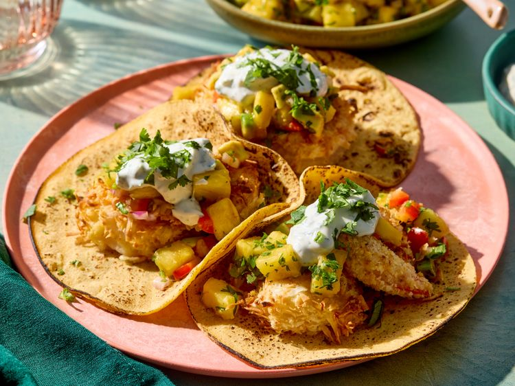

Home
Crispy Coconut Shrimp Tacos

Description
Crispy Coconut Shrimp Tacos are a tropical twist on taco night! Juicy
shrimp are coated in a golden blend of shredded coconut and panko
breadcrumbs, then fried to crispy perfection. Nestled in warm tortillas,
they’re topped with tangy slaw, creamy avocado, and a drizzle of zesty
lime crema.
Every bite bursts with crunchy texture, sweet coconut flavor, and a hint
of heat—making these tacos a fun, fresh, and irresistible treat.
Ingredients
-
Taco Shells or Tortillas
- Corn tortillas (traditional)
- Flour tortillas (softer and flexible)
- Hard taco shells (crispy)
-
Protein (Choose One)
- Ground beef (seasoned with taco spices)
- Shredded chicken (grilled, boiled, or rotisserie)
- Carnitas (pulled pork)
- Grilled shrimp or fish
- Beans or tofu (for vegetarians/vegans)
Steps
-
Prepare the filling:
- Heat oil in a pan over medium heat.
- Add diced onion and cook until translucent.
- Add minced garlic and sauté briefly.
- Add ground meat (or beans). Cook until browned.
- Stir in taco seasoning, salt, and pepper.
-
Add a splash of water if dry. Simmer for 5–7 minutes until
flavorful.
-
Warm the taco shells:
-
For soft tortillas: wrap in foil and heat in the oven at
180°C (350°F) for 5 minutes, or microwave with a damp towel for 30
seconds.
-
For hard shells: warm in the oven for 3–5 minutes until
crisp.
-
Prepare toppings:
While meat simmers, prep your toppings: shred lettuce, dice tomatoes,
grate cheese, etc.
-
Assemble tacos:
- Spoon meat into taco shells.
- Add toppings of your choice.
- Finish with a squeeze of lime and a sprinkle of cilantro.